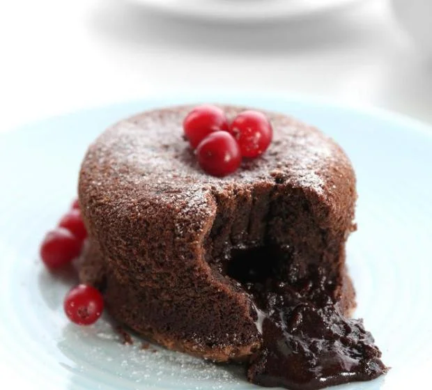
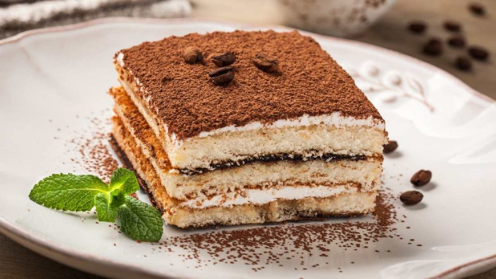

Entradas
Petit gâteau
Petit gâteau é um pequeno bolo criado por Michel Bras e Erick Jacquin em 1981. Nos países de língua francesa, uma sobremesa de petit gâteau com chocolate é chamada de "gâteau fondant au chocolat" ou simplesmente "fondant de chocolate"

Tiramisù
O tiramissu, como dito, é uma receita italiana popular em todo o planeta. Trata-se de uma sobremesa que consiste em camadas de biscoitos de champagne (também chamados de biscoitos tipo inglês ou palitos à la reine) embebidos em café, levando também em sua receita um creme preparado com queijo mascarpone, açúcar, ovos e, por vezes, vinho Marsala. Vale dizer ainda que a sobremesa é finalizada com uma importante polvilhada de cacau em pó.
